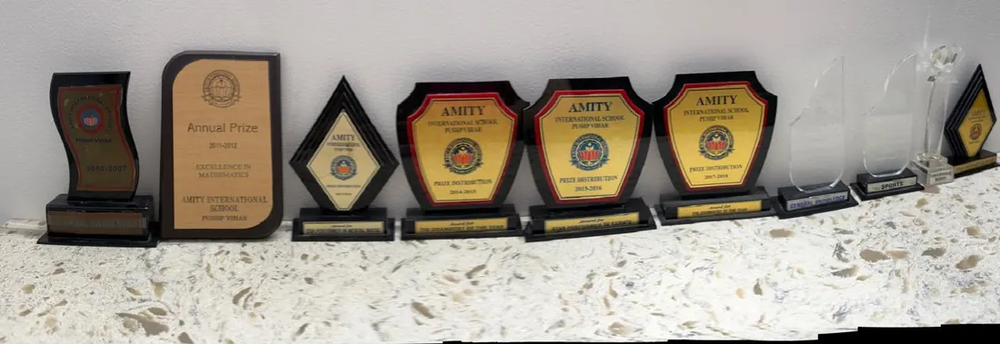
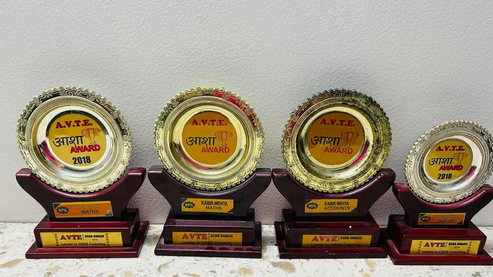
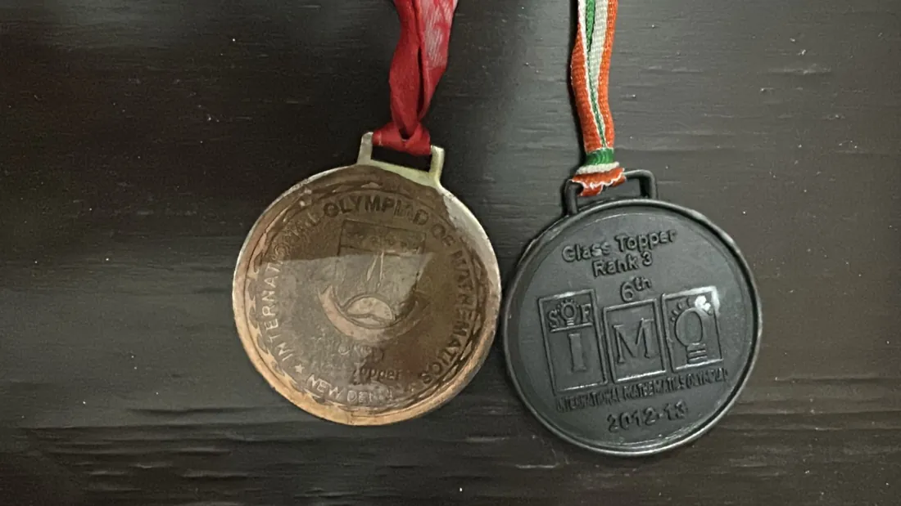
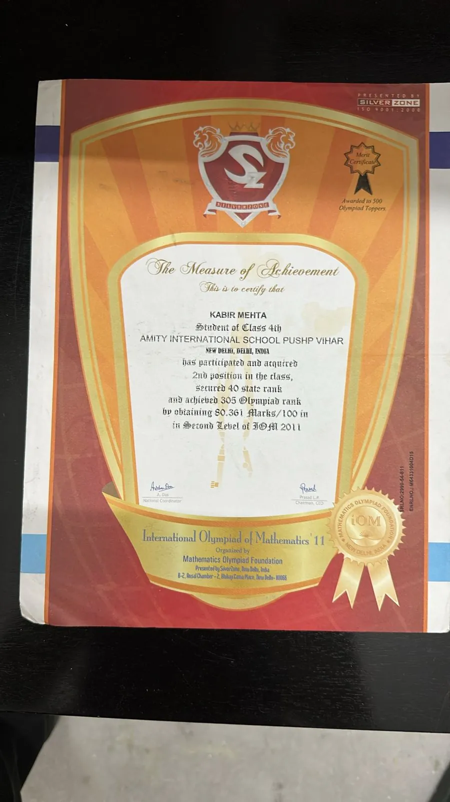
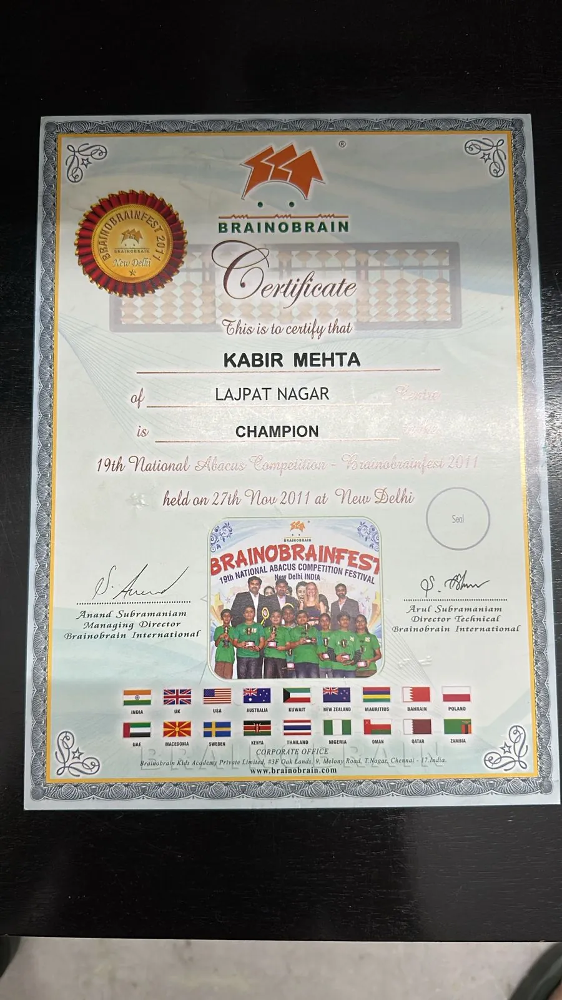
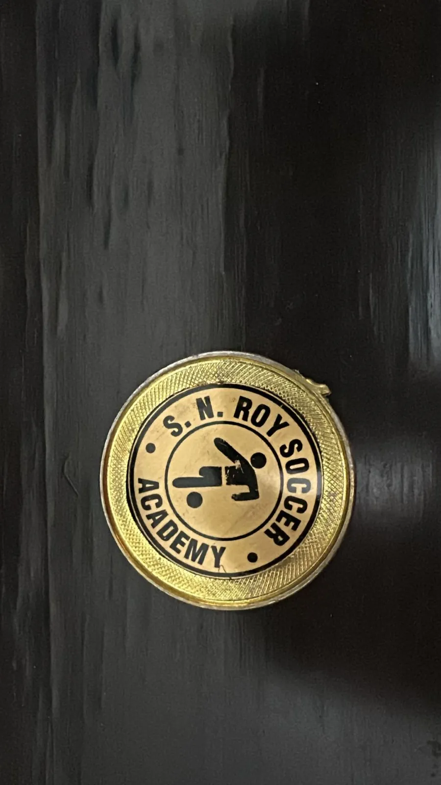
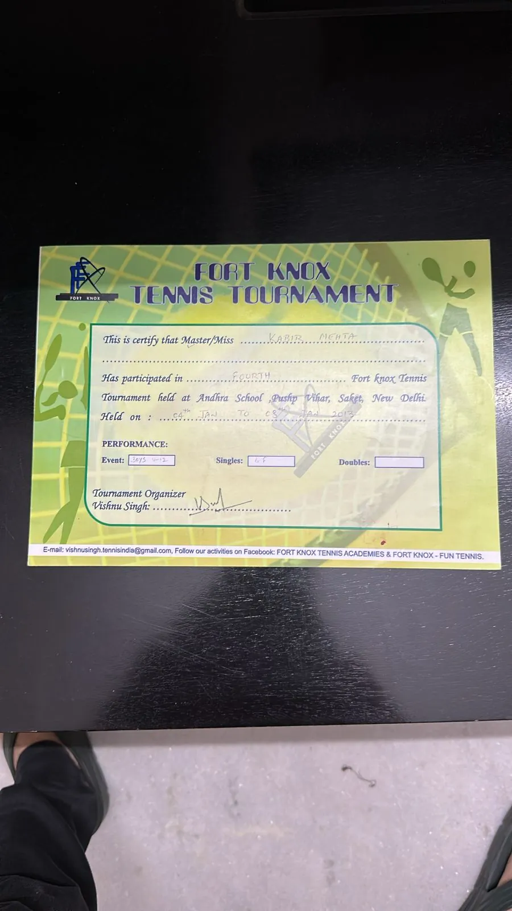

Hi, I'm
Kabir Mehta.
MSc Management & Technological Change · King's College London
FinTech consultant turned AI-curious researcher. I spent two years at FinIQ delivering structured products for global banks, and I'm now researching how AI is reshaping who holds authority inside organisations.
- 2 years FinTech delivery, Bengaluru & on-site North America
- Equity · Credit · FX structured products
- SQL automation that cut manual regression testing
They're not staring… they're networking.

What I'm Doing Now
MSc Management and Technological Change · King's College London
When curiosity gets serious, you move cities.
After FinIQ I wanted global perspectives, a deeper understanding of tech transformation, and a head start on an AI-driven future. New people, new cultures, new experiences: that part needed no convincing.
- Change management & leadership in tech environments
- Design sprints & rapid prototyping
- Working across diverse, international teams
Certificates
Loading certificates…
Projects
Things I've shipped, broken, and rebuilt.
Loading projects…
Research
MSc dissertation · AI and authority in organisations
AI is changing roles. I'm studying the humans in between.
Working with a fintech firm, I'm finding that as AI tools spread, the people who master them fastest often become the ones colleagues turn to, earning real influence that doesn't always match their job title.
- Interviews across roles and levels of seniority
- How managers respond when expertise shifts
- Qualitative research, stakeholder interviews, extensive literature review
The interest itself started earlier, when automating regression testing at FinIQ turned curiosity into something I wanted to pursue properly. Certified in AI Fluency: Foundation & Framework (Anthropic), and exploring AI tools daily since.

FinIQ
Product Application Consultant
From testing systems to testing what I really want.
FinIQ builds structured products platforms for banks globally.
- Led delivery and testing of structured products across equity, credit, and FX
- Automated regression testing using SQL, which cut out a big chunk of manual effort
- Provided on-site support for a leading institutional digital bank in North America
- Collaborated with international clients across time zones
Start small → plan well → iterate → scale.

Christ University
BCom · First Class Honours
Commerce made sense. Finance made more.
Chose Commerce because of family business exposure and a natural grip on maths and accounting. Explored sales through internships and tried marketing competitions, then moved toward finance for long-term growth.
- Finance & Accounting intern at Zoomcar
- Graduated First Class Honours, with a placement at FinIQ
- Audit Committee member: attention to detail and clean, accurate work



Early Years
Started with abacus… upgraded to AI curiosity.
Grew up in New Delhi and studied at Amity International School, Pushp Vihar. Took Commerce with Maths because numbers always made sense.
Went to abacus classes and picked up quite a few trophies early on (peak performance age: 12 to 15 😄). Skating and racquet sports too, and I can still play decently… after a warm-up and a reality check.
The tech obsession started with reading about Steve Jobs in middle school. Followed Apple, then the competitors, and kept going deeper. AI got serious during COVID, when there was finally time to explore, learn and take on remote internships.







Personal Side
Organised… but not boring.
- 🏎️ Huge Formula 1 fan (Red Bull supporter)
- 🎵 Music is constant: techno, house, rap, rock, Indian music, whatever fits the mood
- 📋 Love staying organised and planning ahead
- ⚡ But also enjoy small spontaneous moments. Keeps life interesting